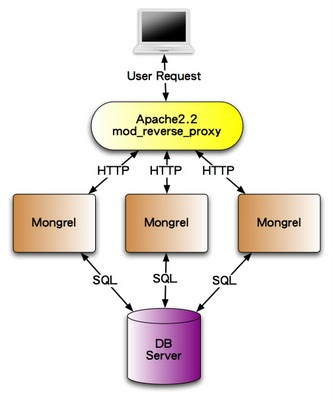

How long would it take your organization to deploy a change (to production) that involves just one single line of code? Do you do this on a repeatable, reliable basis? - Mary Poppendieck
终于要脱离开发阶段，要把完成的Ruby on Rails应用程式拿来出上线见人了。在rails server指令中，其实是使用一套叫做WEBrick的服务器，这是一套纯Ruby实作的HTTP服务器。虽然开发时拿来用很方便，但是它的效能并不适合作为正式环境来使用。因此，我们在这一章将介绍几种在Linux上实际作为Production用途的部署方案。
虽然Rails在Windows平台上也可以执行开发，但是如第二章作业系统一节所说，Ruby在Windows平台上资源较少，效能也不如在Unix-like系统上，因此很少人拿来当做Production服务器用途。
在这云端时代，在线上租用服务器是最经济实惠的选择，常见的选择包括：
你可以获得一整台的root权限，常见的厂商包括：
VPS(Virtual Private Server)出身的Linode和DigitalOcean因为价格非常便宜，一个月只需要美金五块、十块起跳，机房离台湾也近，所以成为装机的高C/P值首选。Amazon、Microsoft和Google则以丰富的云端生态系见长，除了虚拟主机之外，它还有提供数据库、档案储存和NoSQL数据库等等各式各样的代管服务。
PaaS则是固定的执行环境，只支持特定的程式语言或框架，支持Ruby的有：
不过这些PaaS价格贵的多，而且大多只有在美国有机房，笔者通常只是拿他们的免费方案试玩。
租到一台虚拟机之后，你应该可以使用SSH登入。以下则是在Ubuntu 14.04上安装系统和Ruby的指令：
sudo apt-get update
sudo apt-get upgrade -y
sudo dpkg-reconfigure tzdata
sudo apt-get install -y build-essential git-core bison openssl libreadline6-dev curl zlib1g zlib1g-dev libssl-dev libyaml-dev libsqlite3-0 libsqlite3-dev sqlite3 autoconf libc6-dev libpcre3-dev curl libcurl4-nss-dev libxml2-dev libxslt-dev imagemagick nodejs
wget http://cache.ruby-lang.org/pub/ruby/2.1/ruby-2.1.5.tar.gz
tar xvfz ruby-2.1.5.tar.gz
cd ruby-2.1.5
./configure
make
sudo make install
请将2.1.5换成最新的Ruby版本
以下是安装MySQL的指令，过程中会提示你输入root密码。
sudo apt-get install mysql-common mysql-client libmysqlclient-dev mysql-server
sudo gem install mysql2 --no-ri --no-rdoc
mysql -u root -p
CREATE DATABASE your_production_db_name CHARACTER SET utf8;
最后一步是手动建立一个数据库，等会Rails会用到。
Passenger是目前部署Ruby on Rails最好用、设定最简单的方式，它是一套Apache和Nginx的扩充模组，可以直接支持Rails或任何Rack应用程式。
Passenger不支持Windows平台
以下我们选择使用Nginx是目前最流行的网站服务器之一，相较于Apache虽然功能较少，但运作效率非常优秀。要让Nginx装上Passgener不需要先装Nginx，只需要执行以下指令：
$ sudo gem install bundler passenger --no-ri --no-rdoc
$ sudo passenger-install-nginx-module
这是因为Passenger必须与Nginx一起编译的关係，所以Passenger的安装指令就包括了安装Nginx。接着我们设定 Nginx 啟动脚本：
wget -O init-deb.sh http://www.linode.com/docs/assets/1139-init-deb.sh
sudo mv init-deb.sh /etc/init.d/nginx
sudo chmod +x /etc/init.d/nginx
sudo /usr/sbin/update-rc.d -f nginx defaults
Nginx啟动用法：
sudo /etc/init.d/nginx start 啟动Nginx，打开浏览器指向 Server IP 可以看到 Welcome to nginx!
sudo /etc/init.d/nginx stop
sudo /etc/init.d/nginx restart
要设定Rails应用程式请编辑/opt/nginx/conf/nginx.conf这个设定，将server那段改写成如下：
server {
listen 80;
server_name www.yourhost.com;
root /somewhere/public;
passenger_enabled on;
}
注意到root 是指向public这个静态档案的目录。设定好之后，执行sudo /etc/init.d/nginx restart便会啟用。如果之后你的Rails有任何修改要重新载入，但是并不想把Nginx整个重开，请在你的Rails应用程式目录下执行touch tmp/restart.txt即可，这样Passenger就会知道要重新载入Rails，而不需要重开Nginx。
我们稍候会再回头来调整这个Nginx设定。
Passenger预设的Rails运行环境是production。在production环境下操作Rails指令有些必须加上环境变数，例如
rake db:migrate RAILS_ENV=production或是主控台rails console production
决定应用程式服务器之后，接下来我们来讨论你要如何把程式部署上去？最常见的作法，不就是开个FTP或用SFTP上传上去不就好了？再不然SSH进去，从版本控制系统更新下来也可以。但是你有没有想过这部署的过程，其实是每次都重复一再执行的步骤(除非你部署完之后，就不需要再继续开发和升级)，随者时间的演进，这个过程常常会有各种定制的指令需要要执行，例如安装设定档、更新啟动某个Daemon、清除快取等等。因此，好的实务作法是自动化部署这个动作，只要执行一个指令，就自动更新上去并重新啟动服务器。这样也可以大大避免漏做了什么部署步骤的可能性。
习惯上我们会在服务器上开一个专门的帐号，用来放Rails应用程式，指令如下：
sudo adduser --disabled-password deploy
sudo su deploy
ssh-keygen -t rsa
复制本机的 ~/.ssh/id_rsa.pub 到 /home/deploy/.ssh/authorized_keys
chmod 644 /home/deploy/.ssh/authorized_keys
chown deploy:deploy /home/deploy/.ssh/authorized_keys
这样本机就可以直接ssh deploy@{your server ip}登入无须密码。
Capistrano是Rails社群中最常使用的部署工具。首先，我们在本地端安装这个Gem：
gem install capistrano
然后在Gemfile中加上：
gem 'capistrano-rails', :group => :development
gem 'capistrano-passenger'', :group => :development
在你的Rails专案目录下执行：
cap install
这样就会产生几个档案，首先编辑Capfile加入：
require 'capistrano/rails'
require 'capistrano/passenger'
编辑config/deploy.rb，请替换以下的application名称和git repo网址：
ssh-add # need this to make key-forwarding work其中的
ssh-add可以参考SSH agent forwarding 的应用的说明。
编辑config/deploy/production.rb将 example.com 换成服务器的IP或网域。
本机执行cap deploy:check，就会自动登入远端的服务器，在登入的帐号下新建current、releases和shared这三个目录，releases是每次部署的纪录，而current目录则是用symbolic link指向releases目录下最新的版本。
因为我们不希望将数据库的帐号密码和cookie secret key也放进版本控制系统，所以会将存有正确帐号密码的database.yml和secrets.yml档案预先放在服务器的shared/config目录下，自动部署时会覆盖过去。
到此终于可以部署了，执行cap production deploy就可以了。
上述的Nginx我们将server设定直接写在nginx.conf中，通常我们会拆开：
编辑 /opt/nginx/conf/nginx.conf 在 http 裡面加上 include /opt/nginx/conf/vhost/*.conf;
新增 /opt/nginx/conf/vhost/your_domain.conf，记得修改正确的root和server_name：
server {
listen 80;
server_name exercise.ihower.tw;
root /home/deploy/rails-exercise/current//public;
passenger_enabled on;
passenger_min_instances 1;
passenger_show_version_in_header off;
server_tokens off;
location ~ ^/assets/ {
expires 1y;
add_header Cache-Control public;
add_header ETag "";
break;
}
}
以上设定包括关闭在Header中显示服务器版本信息、设定Assets静态档案成为永不过期(Rails的Assets Pipeline会加上版本号，所以不需要担心)、设定Passenger至少开一个Process。
编辑nginx.conf
worker_processes auto;
events {
worker_connections 4096;
use epoll;
}
http {
# .....
client_max_body_size 100m;
gzip on;
gzip_disable "msie6";
}
以上设定包括自动调整Nginx使用多少process(跟主机有多少CPU核有关)、打开gzip压缩(可以大大减少网页下载时间)、设定档案上传可以到100mb(预设只有1Mb超小气的，上传一张图片就爆了)。
最后重开sudo /etc/init.d/nginx restart
网站持续运作，log目录下的production.log可是会越长越肥，因此需要定期整理备份，这里有几种方法，一种是修改config/environments/production.rb的设定：
config.logger = Logger.new(config.paths["log"].first, 'daily') # 或 weekly,monthly
或是
config.logger = Logger.new(config.paths["log"].first, 10, 10*1024*1024) # 10 megabytes
不然，你也可以使用Linux内建的logrotate工具。
参考Securing your Ubuntu VPS for hosting a Rails Application可以作一些基本的防护，包括：
虽然我们努力避免，但总是程式总有出错的时候，一个上Production的专业 Rails app 绝不会痴痴地等待使用者告诉你网站炸了，而是要能够主动通知及纪录下这个错误例外(exception)，好让我可以 trace error、fixed bug 甚至在发生错误没多久就可以通知苦主发生了什么事情。
最基本我们可以安装Exception Notifier，这个套件会在发生例外时寄 email 通知你(们)。
或是使用第三方服务，例如：
这些第三方服务可以在网站发生例外错误的时候自动将错误信息收集起来。并且提供了还蛮不错的后台可以浏览。这个解法安装最简单，功能又很够用，还可以统计及追踪例外处理的情况，我个人十分推荐使用第三方服务。
除了自己安装一些主机效能监控软件之外，也很常见使用专门的第三方服务：
除了Passenger之外，还有另一种反向代理(Reverse proxy)的运作方式，它分成Web服务器和应用程式服务器，图示如下：

其中Web服务器可以是Apache、Nginx，但是它除了提供静态档案之外，其餘的任务就只是做reverse proxy将request分发到应用程式服务器。
而应用程式服务器负责执行Ruby on Rails程式，这有几个选择：
相较于Passenger，设定上会比较复杂，不过好好调校可以获得更好的效能。
Passenger和Unicorn都是属于Multi-process的模型，每一个Process是一个完整的Rails app使用一个CPU core。这种模型的优点是应用程式撰写容易，不用管执行序是否安全的问题(Thread-safety)问题，而且如果每个Request都没有I/O blocking，利用的CPU效率就是最好的，因为不像Thread有Context switch。但是，最大的缺点是如果碰到I/O blocking(太容易了，最基本的连接数据库就是一种相较于CPU是很慢的I/O操作)，能同时负担的连线就很容易受到限制。因此在这种模型下，开发都会建议你监控每个HTTP request的执行时间在某个ms标準以下(例如20ms)，太久的操作就会建议是改用Background job，这就是为了可以确定服务器的执行效率。因此虽然”同时”连线线就等于能用的Process数量(例如最基本512 mb的主机上，通常可以开3个Rails process，但是因为每个连线都控制在20ms以下，所以每秒鐘能处理的requests数量还是十分惊人，足以应用绝大部分的应用场景。
这个无法应用的场景，就是大量的HTTP持续连线需求了，例如聊天室，每个使用者连线持续占用Process，而大多时间都在等待，导致服务器能同时提供的连线非常有限。
要对应这种需求，一般人可能直觉联想到的方案就是使用Multi-threaded了，虽然Rails本身有支持了config.threadsafe!模式，但是Multi-threaded的模型在Rails社群中其实并不流行，撇开multi thread程式的复杂性不谈，主因应是对付这种concurrency需求，最有效的方案不是Multi-threaded，而是Evented-driven的 Reactor Pattern。Thread再怎麼便宜，同时开成千上万个也是会痛的，而Reactor pattern是一个无穷loop，无论有多少连线，只有在有事件发生时，才会让CPU做事。Ruby中实作此模型最出名的函式库就叫做EventMachine。
要让Rails採用evented-driven架构，除了要用Thin server(使用EventMachine)之外，所有有关I/O操作的函式库都要换用evented版本，例如HTTP client等等，不然也是功亏一簣。如何设定，可以参考这一个Demo app https://github.com/igrigorik/async-rails
不过，因为Rails的设计并不是以Evented模型为最高指导原则，所以实务上比较多人会偏好採用更轻量，更以Evented为原则的框架来专门处理需要大量非同步连线的情景，例如：
其他语言的Evented框架包括Node.js、Netty等。
更多讨论可以参考：
另一方面，Rails 的走向则是对 Multi-threaded 模式有越来越多的支持，例如 Rails 4 的 Live Streaming 功能: Why Rails 4 Live Streaming is a big deal。
总而言之，Multi-Process 还是最不用烦恼的模型，除非您对Multi-Threaded或Event-Drivened模型有比较深入的了解，知道如何撰写Thread-Safe的程式、知道Evented-driven的原理和限制，否则笔者还是保守建议使用Milti-Process模型的Ruby服务器。